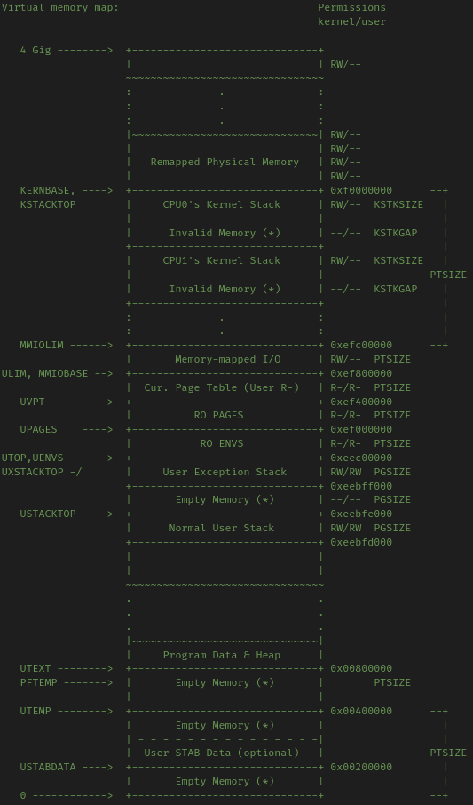

MIT 6.828 Labs 实验记录
Overall
- 6.828自带了一个打分系统，在Lab文件夹下执行
make grade即可运行这个系统来检验自己的解答。
Build up the environment
Compiler Toolchain
由于Archlinux中的objdump和gcc均满足Lab的要求，不需要手动搭建编译环境。
QEMU emulator
建议follow一下MIT官网上最新版的6.828课程页面。老的课程页面上的链接可能不可用。此处根据Fall 2018的课程页面进行配置。
由于QEMU的调试系统不完善，课程组准备了改进过的QEMU，使它可以与系统中的GDB调试器绑定，并使用GDB来调试。执行以下步骤安装打好补丁的QEMU:
- 执行
git clone https://github.com/mit-pdos/6.828-qemu.git qemu拉取源代码 - 安装各种依赖。在Archlinux下的安装方式如下：
- libdtc：
yay DTC，任选一项安装。 - python：坑爹的是都8102年了这门课还不支持python3.不过Arch一般自带python2,问题不大
- libdtc：
- 进入源代码文件夹，Configure the source code
- 执行
./configure --disable-kvm --disable-werror --python= <pathToPython2>
- 执行
- 执行
make && make install进行安装
安装到一半，报错：
1 | qga/commands-posix.c: 在函数‘dev_major_minor’中: |
很显然是有两个函数major和minor在使用之前并未声明。这是两个库函数，在linux下的<sys/sysmacros.h>头文件中有定义，然而MIT给的代码里并没有包含这个头文件。根据报错信息打开qga/commands-posix.c，添加#include <sys/sysmacros.h>，保存。
再次安装，装到一半又报错：
1 | /usr/bin/ld: ../hw/9pfs/virtio-9p.o: in function `stat_to_v9stat': |
差不多的理由，还是缺少库函数。也不管重复包含dirty不dirty了，向hw/9pfs/virtio-9p.c中添加#include <sys/sysmacros.h>，保存后再次编译。
因为类似的理由，还需要添加这个头文件的源文件有linux-user/strace.c。
Lab 1 Booting a PC
Lab1的源码可以从https://pdos.csail.mit.edu/6.828/2018/jos.git处clone到。
Part 1 PC bootstrap
这一部分的目的是让我们熟悉x86汇编语言和PC bootstrap过程，并熟悉QEMU和gdb的操作。
首先在lab目录下执行make命令来编译内核和启动器。编译完成的内核与启动器位于obj/kern/kernal.img镜像文件中，这个镜像文件是一个用于模拟真实硬盘的虚拟磁盘。
执行make qemu可以正式在qemu中运行编译好的操作系统，此时命令行终端会创建一个新的窗口，同时在终端中显示与窗口中同样的内容(并接受同样的输入)。方便起见，这里我们用终端进行接下来的操作。
一开始这个shell只有两条简单的指令：help和kerninfo。后者会打印出目前的内核状态：
1 | Special kernel symbols: |
要退出qemu可以打出Ctrl+a x。
Layout of the physical address space
| —————– | <- 0xFFFFFFFF(4GB) |
|---|---|
| 内存映射的虚拟地址 | |
| —————– | <- 取决于RAM的数量 |
| 扩展内存 | |
| —————– | <- 0x00100000 (1MB) |
| BIOS所在的ROM | |
| —————– | <- 0x000F0000 (960KB) |
| 16位机使用的扩展ROM | |
| —————– | <- 0x000C0000 (768KB) |
| VGA Display | |
| —————– | <- 0x000A0000 (640KB) |
| Low Memory | |
| —————– | <- 0x00000000 |
对于一开始的16位机来说，它们只能使用一共最下面那1MB的物理存储，而可用的内存只有标识为Low Memory的640KB。VGA区是硬件保留区，用于当作视频播放缓冲区等。
就算是在Intel突破了“1MB的瓶颈”之后，PC设计师也仍然对于最低的1MB地址空间使用原始的架构，这是为了软件的向后兼容性。这样就在LowMemory和扩展内存之间留下了一个 空洞 ，为那些16位的软硬件所使用。
在计算机从32位升级为64位时，BIOS在地址空间的最顶段因为类似的理由留下了第二个空洞。
The ROM BIOS
为了单步调试计算机的启动过程，我们需要两个终端，一个用make qemu-gdb来启动qemu虚拟机，一个用make gdb来将gdb调试环境连接到虚拟机上。
make qemu-gdb会将处理器暂停在即将执行第一条指令之前并等待gdb的连接，这时在另一个终端中使用make gdb就可以通过gdb来调试操作系统内核。
gdb终端会显示一段结尾如下的信息：
1 | The target architecture is assumed to be i8086 |
其中的第二行代表着目前将要执行的指令，也就是虚拟机开启过程的第一条指令。
这条指令的含义是：
0xffff0:：指令位于的虚拟存储系统地址，对应于上面的架构，这个位置是属于BIOS的ROM区域的最上面，也就是BIOS程序的起始位置。[f000:fff0]：指示当前CS和IP寄存器的值。CS寄存器指示代码所在的数据段，IP则是偏移量。ljmp：跳转指令，跳转到CS和IP为[f000:e05b]的位置，转换成存储地址就是0xfe05b。- CS和IP寄存器与物理地址的转换规则为
ADDR = CS<<4 + IP。
- CS和IP寄存器与物理地址的转换规则为
保证启动时优先执行BIOS代码是很重要的，因为一开始内存中根本不会有其他可以执行的代码。BIOS会初始化所有启动所需要的重要设备，检查内存和磁盘的挂载情况。最后，就像操作系统课程中所学的那样，它找到磁盘上的boot loader并将控制权转移给它。
- 对GDB使用
si命令可以继续单步调试之后的汇编代码，观察BIOS所做的工作。
Part 2 The boot loader
众所周知，软盘和硬盘都被分成大小为512字节的段，而这些段是系统级IO的最小单位。如果一个磁盘是启动盘，那么它的第一个段就被称为 boot sector ，并被存放boot loader的代码。当BIOS找到一个boot sector后，它就会将其加载到内存中，并将控制权转交给boot loader代码段。
(对于CD-ROM来说，它的前2M都属于boot sector，因此可以存放更大的启动镜像)
在6.828文件夹中，boot loader的代码存放于boot/boot.S与boot/main.c中。这些代码主要完成两件事：
- 将处理器模式切换到
32位保护模式，这样软件才可以访问大于1MB的物理地址空间。这个工作由boot.S完成。除此之外，boot.S还要建立一个程序栈，让C程序得以运行。 - 将内核代码从硬盘中加载到内存，并将控制转交给内核代码的入口函数。这个工作由
main.c完成。
阅读main.c的代码可以发现很多 非常dirty的 细节(包括但不限于：使用goto，while(1)代替sleep，写的很乱的函数指针)，如果对于这个过程的细节感兴趣可以直接阅读源码，注释写的很详细明白。
bootloader的代码会被BIOS加载到0x7c00，这是由boot/Makefrag文件所决定的。修改这个文件中-Ttext参数后面的地址可以让BIOS从其他地址来加载，执行make clean && make重新编译可以查看这样做会引发什么样的系统错误(事实上系统会停机并进入一个无限循环等待用户的操作)；在GDB调试时可以在这个位置设置断点，以精确地进入bootloader代码段。
obj/boot/boot.asm和obj/kern/kernel.asm分别包含着bootloader和kernel的反汇编结果以及注释，可以用于调试和分析。下面就来分析一下BootLoader的代码逻辑。
- BootLoader代码逻辑研究
- 第一阶段：初始化
- 宏常量的设定：
.set CR0_PE_ON 0x1这个常量是控制32位保护模式开关的指标。 - 全局设置：
cli指令关闭中断处理，cld指令将串操作的内存地址访问模式设为增序 - 寄存器初始化：用xor和mov指令将几个关键寄存器清零
ds：数据段寄存器，存放全局变量区域的头指针ss：栈段寄存器，存放堆栈段的首地址(esp寄存器存储的是偏移量)es：扩展段寄存器
- 宏常量的设定：
- 第二阶段：打开32位保护模式
- 开启A20地址线：在16位模式下，用于寻址的地址总线只有20根，这种情况下大于1MB的地址空间是全部被置为0的。只有开启20～23号四条地址线，才能对1MB以上的地址空间进行寻址，从而进入32位模式。
- 通过一个循环来等待A20设备准备完毕：用
in指令从0x64端口接受信息，如果不是代表准备完毕的信息则继续循环。 - 向
0x64和0x60端口发送信号，打开A20地址线。
- 通过一个循环来等待A20设备准备完毕：用
- 建立32位段虚拟内存与物理存储器的映射关系表：
lgdt gdtdesc指令。 - 启动32位保护模式：用
CR0_PE_ON与cr0寄存器的值做或运算，打开32位保护模式。cr0到cr3四个寄存器是系统控制寄存器，它们的值直接决定系统的运行状态。cr0控制的是处理器，因此可以通过修改其值来进入其他运行模式。 - 跳转到32位代码区的下一条指令。
- 开启A20地址线：在16位模式下，用于寻址的地址总线只有20根，这种情况下大于1MB的地址空间是全部被置为0的。只有开启20～23号四条地址线，才能对1MB以上的地址空间进行寻址，从而进入32位模式。
- 第三阶段：修改段寄存器的值为32位区地址，初始化
esp寄存器的值，建立C程序栈 - 第四阶段：进入
main.c的bootmain函数，开始读取内核代码。 - 第五阶段：跳转到内核代码区，交还控制权。
- 第一阶段：初始化
习题解答
Q: 处理器什么时候开始执行32位代码？哪条指令切换了处理器模式？
A：
0x7c2a: mov %eax,%cr0指令切换了处理器模式，从随后的跳转指令开始，处理器开始执行32位代码。Q：Bootloader执行的最后一条指令是什么？Kernal执行的第一条指令又是什么?
A：Bootloader执行的最后一条指令是向内核代码段跳转的指令
0x7d71: call *0x10018，kernel执行的第一条指令是0x10000c: movw $0x1234,0x472。Q：Bootloader是如何决定它要读取多少数据的？它从哪里获取的kernal大小信息？
A：Bootloader首先从内核代码区读取了长度固定的ELF头部，再从头部中获取了这个区域是否为ELF文件、数据段数量、每段的长度、起始地址等信息。
(课程网页在这一部分讲了一大堆ELF头和指针的知识，如果已经学过CSAPP第7章的话完全可以跳过。需要注意的是，6.828所采用的可执行目标文件代码 并非是位置无关代码 ，因而 链接器会将程序将加载到的内存位置写在文件中 。利用这一点，我们可以执行objdump -f <filename>命令，获取程序在内存中的入口位置。)
Part 3 The kernel
在内核被授予控制权后，它要做如下几件事：
Virtual memory address mapping
当我们观察bootloader程序的时候，我们可以发现它的 链接地址(指用objdump -h打印出来的ELF节头部信息中的LMA，linked memory address) 和 虚拟地址(指用objdump -h打印出来的ELF节头部信息中的VMA，virtual memory address) 是完全一致的；然而对于kernel，这两个地址却有着不小的差距。
操作系统内核常常会在非常高的虚拟地址空间(例如0xf0100000)运行，这是为了把比较低的虚拟地址空间留给用户进程使用。然而大部分机器没有这么多的内存，于是它们将虚拟地址0xf0100000映射到物理地址0x00100000。这样一来虽然内核所在的加载地址很高，它的实际加载地址却是位于RAM区域的最底端，挨着BIOS所在的ROM地址区域。
虚拟地址映射操作是由专门的硬件来完成的，要打开虚拟地址映射只需要对cr0寄存器设置CR0_PG标志，就像之前打开32位保护模式所做的那样。
kernal被加载的地址为0x100000,因此它从此处开始运行。它所做的第一项工作就是打开虚拟地址映射，然后跳转到虚拟地址0xf010002f的位置，恰好对应于物理地址中下一条指令所在的位置。这样，内核就自然地实现了从物理地址到虚拟地址的转换。
Formatted printing to the console
在完成虚拟地址映射之后，下一步是对终端进行格式化输入输出以创建交互式操作界面。
lib/printfmt.c中提供了输出函数的原型，kern/printf.c和kern/console.c则提供了有关内核输出和交互的函数。
Answer to Exercise 8
本题要求补全printfmt函数对于
%o(8进制输出)的处理机制，只需要仿照下面十六进制的机制即可。
1 | case 'o': |
习题解答
Q：解释printf.c和console.c之间的接口，尤其是console.c中的哪个函数被如何用于printf.c。
A：console.c向printf.c提供了cputchar函数,它希望在调用printf.c中的输出函数时可以利用cputchar函数来输出每一个字符。printf.c遵守这个约定,以包含cputchar的外壳函数调用printfmt.c中的输出函数,保证了所有输出都按照console.c所规定的标准来输出。
Q：解释console.c中的这一段代码:
1 | if (crt_pos >= CRT_SIZE) { |
A：
这段代码来自cga_putc函数,这个函数是在CGA显示屏图形卡上打印字符的函数。crt_pos是一个整形全局变量,它的含义是目前光标在屏幕上的位置。阅读
console.h的内容可以发现CRT_SIZE被定义为屏幕上能够容纳的字符个数,而CRT_COLS则是屏幕的宽度。条件判断是为了确认当前光标的位置是否已经超出了屏幕底端。如果超出了，就把屏幕上第二行到最后一行的内容全部上移一行，并将空出来的位置用
0x0700 | ' '填满。总而言之，这段代码是为了实现屏幕满了之后向上滚动的功能。
Q：单步调试如下代码：
1 | int x = 1, y = 3, z = 4; |
- 在对cprintf的调用中，fmt对应的实参是什么？ap呢？
- 列出对
cons_putc,va_arg和vcprintf的每一次调用，以及cons_putc的参数,va_arg中ap的指向和vcprintf的参数值。A：
- fmt对应的实参是
"x %d, y %x, z %d\n"，ap指向带有x，y和z的参数数组。- 甚至不需要单步调试，自己阅读
lib/printfmt.c就足够了。Q：运行如下代码：
1 | unsigned int i = 0x00646c72; |
解释输出结果。如果这段代码运行在大端序机器上而非小端序机器上，你会如何修改它来得到同样的结果？
A：输出结果是
He110 World。前面的e110是57616在十六进制下的表示(因为使用了%x)，后面的rld是字符串输出的结果。int占4个字节而每个字符占一个字节，因而i所占的内存空间与一个长度为4的字符数组是相同的。这样一来，如果用i的地址去输出字符串，就会从i的地址开始按字符去读取内存中的数据，直到读到0为止。由于运行在小端序机器，0x72排在最前面一个字节，被解析成ASCII码值为0x72的r；接下来0x6c和0x64分别被解释为l和d。最后一个字节是0x00,正好是字符串终结符。如果机器是大端序，只需要将i修改为
0x726c6400即可，57616不需要改变。Q：被
cprintf("x=%d y=%d", 3);打印出的y值会是多少？为什么？A：会是一个随机的整形数。因为cprintf解析到了两个
%d符号，但ap的长度只有1,这导致第二个%d读到了一片未赋值的内存地址，其值自然是随机的。
The Stack
(仔细读过CSAPP第三章的话汇编语言和程序栈这一块应该没问题了，就不说了)
Answer to Exercise 9
Q：确定内核在什么时候初始化程序栈及程序栈的初始位置。内核是如何为栈保存空间的？
A：
f010034: mov $0xf0110000, %esp：这一条指令初始化了栈指针，将程序栈建立于虚拟地址0xf0110000位置。从这个地址开始，程序栈随着程序运行向下增长。
ebp指针被称为“基指针”，它的作用是追踪每个函数的栈帧位置。每个被调用的C函数都要进行如下操作：将ebp寄存器的值压栈、将当前esp指针值拷贝到ebp寄存器。在返回之前，这个函数从栈中取出并恢复ebp寄存器的值。通过这种机制，任何时候ebp寄存器的值都指向正在执行的函数的栈帧头部，而栈帧头部的前一个数据节的值指向该函数调用者的栈帧头部，于是可以通过ebp链来还原函数调用链。
Answer to Exercise 10
这个Exercise的目的是让学生熟悉backtrace的操作和C的程序栈结构。在kernel中有一个自我递归的
test_backtrace函数,通过对这个函数打上断点可以使用p $ebp获取每次调用的栈帧起始位置.第一次调用:栈帧的起始位置为
0xf010ffd8
第二次调用:栈帧的起始位置为0xf010ffb8可以看出这个函数的每个栈帧大小都是
0x20,也就是32个字节，对于32位系统来说是八个数据。使用
x/xw命令查看从0xf010ffe0开始整个栈帧的结构。(因为32位系统每个数据是四个字节，所以使用x/xw来查看)
x/xw 0xf010ffe0：0x00000005按照栈帧的结构，这个位置应该是调用者压入栈内的参数。第一次对test_backtrace的调用的确只有一个实参5。
x/xw 0xf010ffdc：0xf01000f4由于栈帧是向下的，这条指令其实查看的是上一个栈帧的最后一部分，也就是函数的返回地址，经验证的确指向调用者的下一条指令。
x/xw 0xf010ffd8：0xf010fff8当前函数栈帧的第一部分，保存着上一个函数的基指针值(%ebp的值)，由于上一个函数已经是整个程序栈底部的函数了，这个地址向上就没有数据了，上个函数的基指针指向的是物理内存区的函数。
x/xw 0xf010ffd4：0x000100b4被调用者保存的%esi寄存器的值
x/xw 0xf010ffd0：0xf011304c被调用者保存的%ebx寄存器的值
x/xw 0xf010ffcc：0xf010004a是test_backtrace中一行代码的地址
x/xw 0xf010ffc8：0x00000000空的，没有数据
x/xw 0xf010ffc4：0x00000005局部变量5
x/xw 0xf010ffc0：0x00000004即将进行下一次递归调用，这是压入的参数4再往下就是返回地址，然后就是下一个栈帧。总的来说，
test_backtrace函数的栈帧结构就是这样。
完成了对栈帧结构的观察后，就可以利用观察结果去做一下任务了。Exercise 11要求我们实现一个mon_backtrace函数，它记录并打印出栈帧信息。inc/x86.h中提供了read_ebp()函数可以直接返回ebp寄存器的值。
输出格式规定如下：
1 | Stack backtrace: |
Answer to Exercise 11
本题要求是按上面的要求修改
kern/monitor.c中的mon_backtrace函数，并将其添加到指令集中。对代码的修改如下：
1 | // 第一处修改 |
Exercise 12要求我们升级这个函数，使其支持如下的输出格式：
1 | Stack backtrace: |
为了根据eip找到函数名，行数和文件名等一系列信息，kern/kdebug.c中提供了debuginfo_eip()函数，我们需要完整地实现debuginfo_eip()函数，并在mon_backtrace中调用这个函数来获得信息。
Answer to Exercise 12
在
debuginfo_eip函数中有一些以__STAB_开头的宏常量,它们所代表的是ELF文件中.stab(在CSAPP中是.symtab)区的开头和结尾位置,以及.stabstr(在CSAPP中是.strtab)区的开头和结尾位置,它们是在链接过程中由kernal.ld定义的。以下是修改内容：
1 | // kern/monitor.c |
至此Lab1结束。运行make grade，50/50大成功。
Lab2 Memory Management
在这个Lab中，我们需要实现操作系统的内存管理系统。内存管理系统包括两个部分：
- 物理内存调度：我们要实现一个以4096个字节大小的页为单位的内存分配器，它将空闲的内存分配给内核和用户，并释放使用完的内存。
- 虚拟内存映射
执行git checkout -b lab2 origin/lab2命令切换到lab2分支，执行git merge lab1合并在lab1所做的更改。
Lab2增加的文件有：
inc/memlayout.h：定义描述虚拟内存空间的布局的函数，定义PageInfo结构体kern/pmap.c和kern/pmap.h：实现inc/memlayout.h中定义的函数kern/kclock.c和kern/kclock.h：与CMOS硬件沟通，读取PC的硬件信息
inc/mmu.h中记录了应当烧录于MMU
单元中的逻辑代码，同样可能对这个lab有所帮助。
Part 1 Physical page management
在这个部分我们需要实现物理内存管理器。这个函数追踪一个由PageInfo结构体组成的链表(这个链表的节点代表着一页未分配的内存)，并负责物理内存的分配和回收。
要想完成这部分的任务，必须要提前了解虚拟内存系统的概念(可以参考操作系统专业教材或者计算机系统教材)，才能看懂并运用各种神奇的操作。
Background knowledge
由于虚拟内存是将很小的物理内存映射到很大的虚拟内存空间，这个映射关系需要一个输入地址和一个输出地址才能作用。物理地址是物理内存中真实的地址，可以直接由硬件寻址得到；虚拟地址/线性地址是物理地址通过转换得到的，用于虚拟内存空间索引的地址。
mmu.h中详细地介绍了线性地址的结构。大体上讲，线性地址分为三段：
Page directory index：页目录的序号(10位)Page table index：页表的序号(10位)Page offset：地址在页内的偏移(12位)
从线性地址的三段式结构可以看出，每个页表包括1024(2的10次方)个页，每个页目录包括1024个页表，而每一页的大小是4096个字节(也就是4KB)。
3段加起来的总长度是32 bits，也就是4个字节，这代表着线性地址可以用一个int32变量表示。
我们可以使用宏命令来取出线性地址的各个段，或将线性地址映射为物理地址。在本lab中，虚拟地址似乎是特指物理地址+固定偏置值所映射到的地址。
在memlayout.h中可以查看到整个虚拟内存地址空间的分配，在此列出并加以解释：

Macro definitions
6.828的代码充满了缩写这种使人不明所以的命名,且有些地方码风诡异,因而将一些可能用到的概念和缩写列举如下:
K和P:带K的标识符往往指kernel,与内核虚拟内存有关；而带P的标识符指physical,与物理存储有关kva:kernel virtual address的简写pa:physical address的简写la:linear address的简写
UVPT：User virtual page table的缩写，是用户页表的开始地址。
为了实现目标功能的代码，我们需要调用许多定义好的函数或者宏，为了方便查看和使用将所有可能需要使用的函数和宏列举如下：
pmap.h:PADDR(addr):将虚拟地址addr转换为物理地址返回KADDR(addr):将物理地址addr转换为虚拟地址返回page2pa(PageInfo*):将PageInfo结构体转换为对应Page的物理地址pa2page(addr):将物理地址转换为pages数组中的PageInfopage2kva(PageInfo*):将PageInfo结构体转换为对应Page的虚拟地址
mmu.h:PDX(la):将线性地址转换为页目录(page directory)的索引